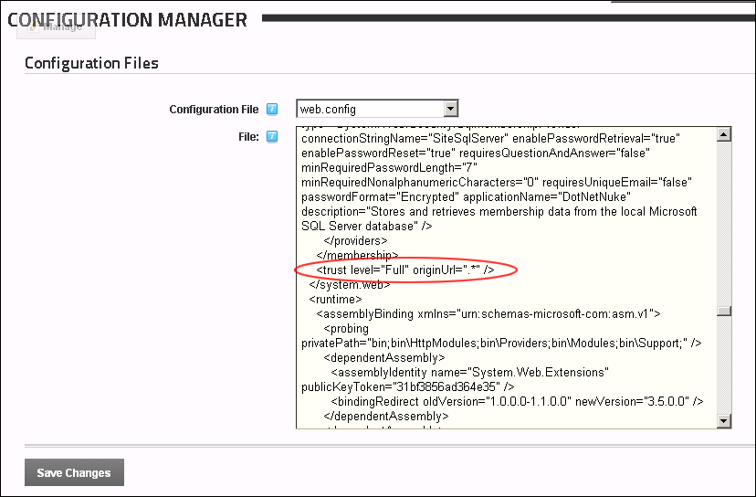

<trustlevel="Medium"originUrl=".*"/>
replace with the text:
<trustlevel="Full"originUrl=".*"/>How to enable full trust on all DNN sites within this installation. By default the trust level for DNN set to medium level trust. However Full Trust is often required for Web applications.
Note: This task is a prerequisite for installing SharePoint Connector and the SearchCrawler.
<trustlevel="Medium"originUrl=".*"/>
replace with the text:
<trustlevel="Full"originUrl=".*"/>